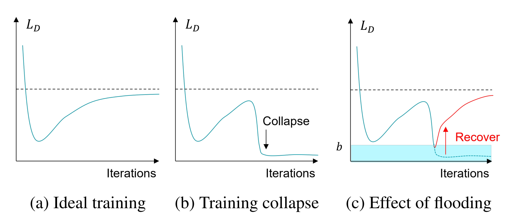
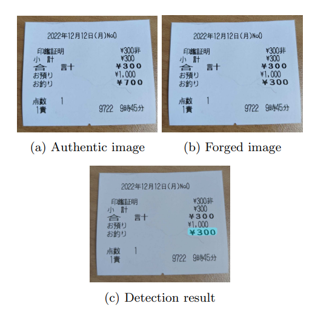

|

|
Flooding Regularization for Stable Training of Generative Adversarial Networks
Iu Yahiro, Takashi Ishida, Naoto Yokoya
We propose a method that applies flooding, an overfitting suppression method in supervised learning,
to GANs to directly prevent the discriminator's loss from becoming excessively low.
Flooding requires tuning the flood level, but when applied to GANs,
we propose that the appropriate range of flood level settings is determined by the adversarial loss function,
supported by theoretical analysis of GANs using the binary cross entropy loss.
We experimentally verify that flooding stabilizes GAN training and can be combined with other stabilization techniques.
We also reveal that by restricting the discriminator's loss to be no greater than flood level,
the training proceeds stably even when the flood level is somewhat high.
Arxiv
|
|

|
書類偽装検出モデルの実現に向けた画像生成と学習方法の提案
Image Generation and Learning Strategy for Deep Document Forgery Detection
Iu Yahiro, Rintaro Hasegawa, Yamato Okamoto, Osada Genki, Peifei Zhu, Hirokatsu Kataoka
We construct a training dataset of document forgery images, named FD-VIED,
by emulating possible attacks, such as text addition, removal,
and replacement with recent DNN-methods.
Additionally, we introduce an effective pre-training approach through self-supervised learning
with both natural images and document images.
In our experiments, we demonstrate that our approach enhances detection performance.
English:
Image Generation and Learning Strategy for Deep Document Forgery Detection
SSII 2023
Note that the first authors for SSII 2023 are both of Rintaro Hasegawa and Iu Yahiro.
|
This page is based on https://github.com/jonbarron/website
|